Introduction to GradBoostR
Nic Coxen
2026-10-22
GradBoostR.RmdExample Dataset
X <- matrix(rnorm(300), ncol = 3)
y_reg <- X[,1] * 2 + rnorm(100)
y_class <- factor(ifelse(X[,1] + X[,2] > 0, "A", "B"))
df <- data.frame(
X1 = X[,1],
X2 = X[,2],
X3 = X[,3],
y_reg = y_reg,
y_class = y_class
)
head(df,8) X1 X2 X3 y_reg y_class
1 -0.56047565 -0.71040656 2.1988103 -1.8361935 B
2 -0.23017749 0.25688371 1.3124130 -1.2130439 A
3 1.55870831 -0.24669188 -0.2651451 2.1788779 A
4 0.07050839 -0.34754260 0.5431941 -0.9114965 B
5 0.12928774 -0.95161857 -0.4143399 -0.1785841 B
6 1.71506499 -0.04502772 -0.4762469 3.7613091 A
7 0.46091621 -0.78490447 -0.7886028 -1.0923781 B
8 -1.26506123 -1.66794194 -0.5946173 -2.3181420 BVisualizing the dataset
df %>% ggplot() +
aes(X1, y_reg) +
geom_point(alpha = 0.6, color = "steelblue") +
labs(
title = "Example Dataset: X1 vs y_reg",
x = "X1",
y = "Regression Target"
)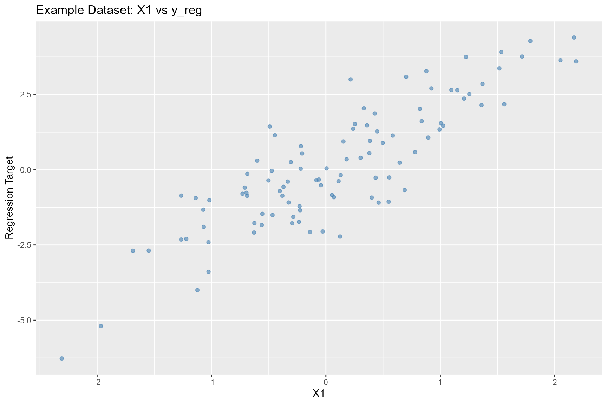
Random Forest Regression
m_rf <- gradboostr_fit(X, y_reg, method = "rf")
pred_rf <- gradboostr_predict(m_rf, X)
head(pred_rf,8) [,1]
[1,] -1.0868246
[2,] -0.8198657
[3,] 2.8271385
[4,] -0.5446718
[5,] -0.4873960
[6,] 3.6988614
[7,] -0.1153470
[8,] -1.9551827Prediction vs Truth
df_rf <- data.frame(True = y_reg, Pred = pred_rf)
df_rf %>% ggplot() +
aes(True, Pred) +
geom_point(alpha = 0.6, color = "darkgreen") +
geom_abline(color = "red", linetype = "dashed") +
theme_minimal() +
labs(
title = "Random Forest Regression: Prediction vs Truth",
x = "True Values",
y = "Predicted Values"
)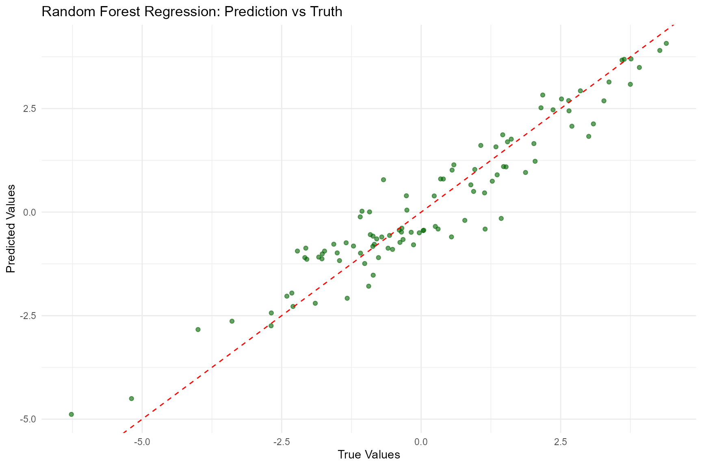
Random Forest Classification
m_rf_c <- gradboostr_fit(X, y_class, method = "rf_class")ENTER rf_class_fit_fast n_trees=100 max_depth=5 mtry=3
BEFORE build loop n_trees=100 nrows=100 ncols=3
pred_class <- gradboostr_predict(m_rf_c, X, type = "response")
head(pred_class,8)[1] B A A A B A A B
Levels: A BClassification Boundary
df_class <- data.frame(
X1 = X[,1],
X2 = X[,2],
Class = pred_class
)
df_class %>% ggplot() +
aes(X1, X2, color = Class) +
geom_point(alpha = 0.6) +
theme_grey() +
labs(
title = "Random Forest Classification Boundary",
x = "X1",
y = "X2",
color = "Predicted Class"
)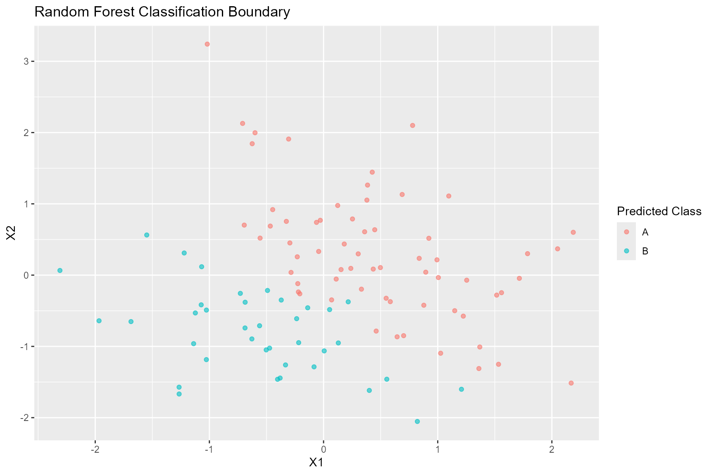
df_class %>% ggplot() +
aes(Class) +
geom_bar(fill = "darkcyan" , alpha = 0.7) +
theme_classic() +
labs(
title = "Random Forest Classification: Class Distribution",
x = "Class",
y = "Count"
)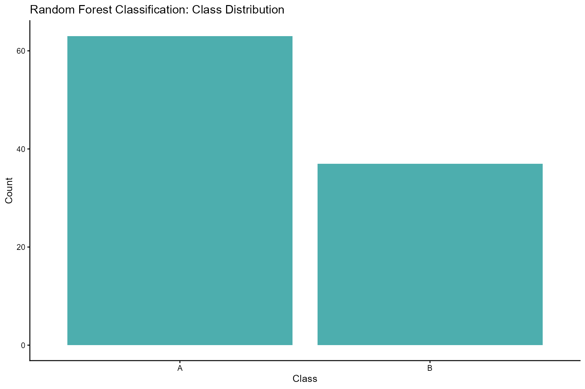
Gradient Boosting Regression
m_gbm <- gradboostr_fit(X, y_reg, method = "gbm", learning_rate = 0.1, n_trees = 50)
pred_gbm <- gradboostr_predict(m_gbm, X)
head(pred_gbm,8)[1] -0.9565474 -0.6889054 2.9151818 -0.5991154 -0.1760658 3.3179254 0.6155382
[8] -1.8862787Prediction vs Truth
df_gbm <- data.frame(True = y_reg, Pred = pred_gbm)
ggplot(df_gbm, aes(True, Pred)) +
geom_point(alpha = 0.6, color = "darkorange") +
geom_abline(color = "black", linetype = "dotted") +
theme_light() +
labs(
title = "GBM Regression: Prediction vs Truth",
x = "True Values",
y = "Predicted Values"
)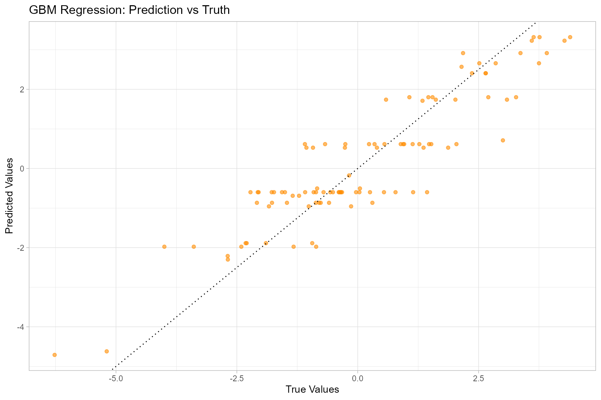
Neural Network Regression
m_nn <- gradboostr_fit(X, y_reg, method = "nn", hidden = 10, epochs = 50)
pred_nn <- gradboostr_predict(m_nn, X)
head(pred_nn,8) [,1]
[1,] 0.08696725
[2,] 0.08952569
[3,] 0.09348689
[4,] 0.09084726
[5,] 0.09180588
[6,] 0.09358113
[7,] 0.09291799
[8,] 0.08680833Prediction vs Truth
df_nn <- data.frame(True = y_reg, Pred = pred_nn)
df_nn %>%
ggplot() + aes(True, Pred) +
geom_point(alpha = 0.6) +
geom_jitter(color = "dodgerblue") +
geom_abline(color = "red", linetype = "dashed") +
theme_grey() +
labs(
title = "Neural Network Regression: Prediction vs Truth",
x = "True Values",
y = "Predicted Values"
)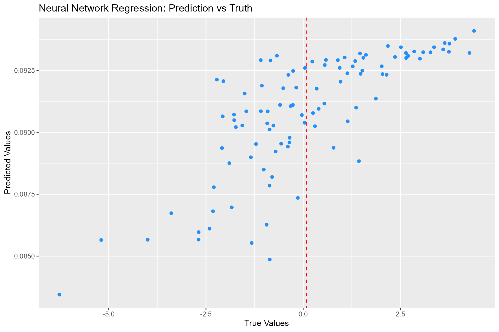
NN vs RF vs GBM Comparison
df_all <- data.frame(
True = y_reg,
RF = pred_rf,
GBM = pred_gbm,
NN = pred_nn
)
library(tidyr)
df_long <- pivot_longer(df_all, cols = c("RF", "GBM", "NN"),
names_to = "Model", values_to = "Pred")
df_long %>% ggplot() +
aes(True, Pred, color = Model) +
geom_point(alpha = 0.5) +
geom_abline(color = "black", linetype = "dashed") +
theme_gray() +
labs(
title = "Model Comparison: Prediction vs Truth",
x = "True Values",
y = "Predicted Values"
)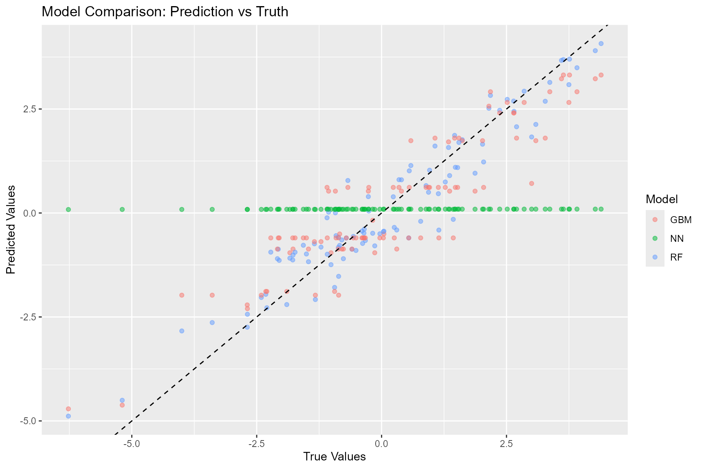
NN Residual Plot
df_res <- data.frame(
Pred = pred_nn,
Resid = y_reg - pred_nn
)
ggplot(df_res, aes(Pred, Resid)) +
geom_point(alpha = 0.6, color = "purple") +
theme_minimal() +
labs(
title = "NN Residuals (hidden = 10)",
x = "Predicted",
y = "Residual"
)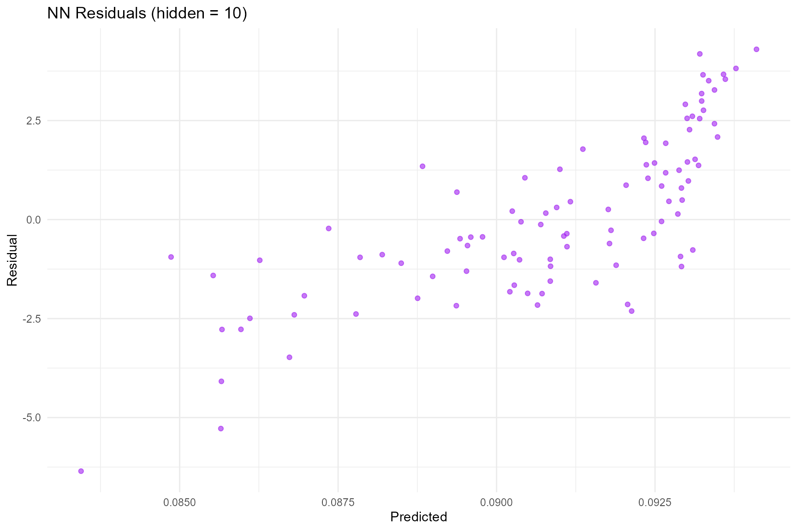
Tuning Hidden Layer Size
sizes <- c(5, 10, 20, 40)
results <- lapply(sizes, function(h) {
m <- gradboostr_fit(X, y_reg, method = "nn", hidden = h, epochs = 50)
pred <- gradboostr_predict(m, X)
rmse <- sqrt(mean((pred - y_reg)^2))
data.frame(hidden = h, RMSE = rmse)
})
do.call(rbind, results) hidden RMSE
1 5 2.049373
2 10 2.048961
3 20 2.046544
4 40 2.045128Visualizing Hidden Layer Tuning
df_tune <- do.call(rbind, results)
ggplot(df_tune, aes(hidden, RMSE)) +
geom_line(color = "darkgreen") +
geom_point(size = 3) +
theme_minimal() +
labs(
title = "Effect of Hidden Layer Size on NN Performance",
x = "Hidden Units",
y = "RMSE"
)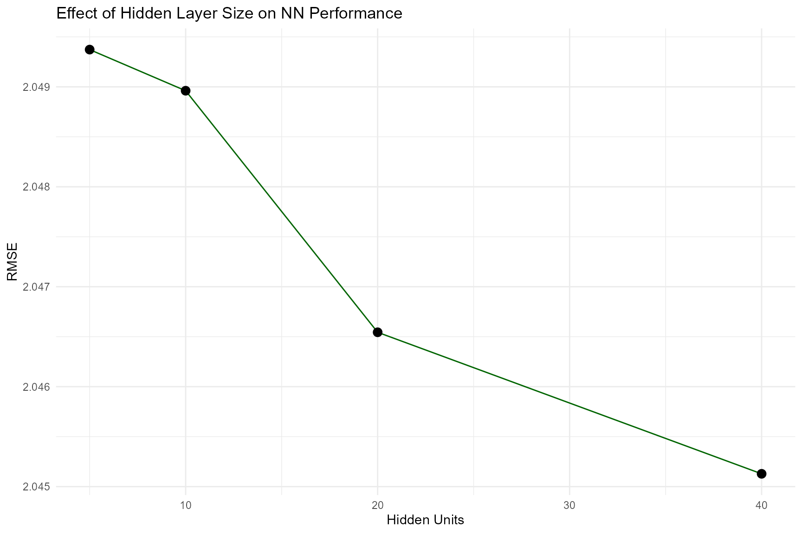
Training Time Benchmark
bench_gbm <- system.time({
gbm_model <- gradboostr_fit(X, y_reg, method = "gbm",
learning_rate = 0.1, n_trees = 50)
})
bench_rf <- system.time({
rf_model <- gradboostr_fit(X, y_reg, method = "rf")
})
bench_nn <- system.time({
nn_model <- gradboostr_fit(X, y_reg, method = "nn",
hidden = 10, epochs = 50)
})
bench_gbm user system elapsed
0.00 0.00 0.01
bench_rf user system elapsed
0.05 0.00 0.06
bench_nn user system elapsed
0 0 0 Benchmark plot
df_bench <- data.frame(
Model = c("GBM", "RF", "NN"),
Time = c(
bench_gbm["elapsed"],
bench_rf["elapsed"],
bench_nn["elapsed"]
)
)
ggplot(df_bench, aes(Model, Time)) +
geom_col(fill = "steelblue") +
theme_minimal() +
labs(
title = "Training Time Comparison",
y = "Elapsed Time (seconds)"
)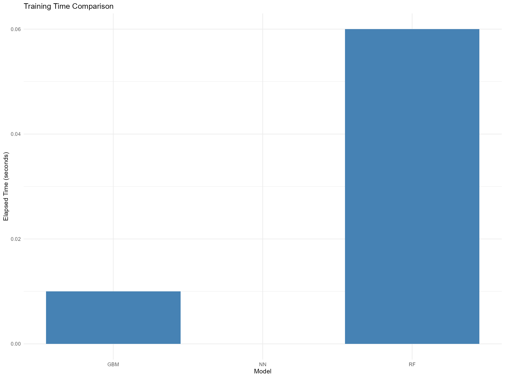
NN Example with Scaled Inputs
X_scaled <- scale(X)
m_nn_scaled <- gradboostr_fit(X_scaled, y_reg, method = "nn", hidden = 10, epochs = 50)
pred_nn_scaled <- gradboostr_predict(m_nn_scaled, X_scaled)
head(pred_nn_scaled,8) [,1]
[1,] 0.08608016
[2,] 0.08885056
[3,] 0.09663287
[4,] 0.09058510
[5,] 0.09174764
[6,] 0.09712062
[7,] 0.09429983
[8,] 0.08458144Learning Rate Example
# Example data
X <- matrix(rnorm(300), ncol = 3)
y_reg <- X[,1] * 2 + rnorm(100)
# Fit models with different learning rates
m_lr_01 <- gradboostr_fit(X, y_reg, method = "gbm",
learning_rate = 0.1, n_trees = 50)
m_lr_005 <- gradboostr_fit(X, y_reg, method = "gbm",
learning_rate = 0.05, n_trees = 50)
m_lr_001 <- gradboostr_fit(X, y_reg, method = "gbm",
learning_rate = 0.01, n_trees = 50)
# Predictions
pred_01 <- gradboostr_predict(m_lr_01, X)
pred_005 <- gradboostr_predict(m_lr_005, X)
pred_001 <- gradboostr_predict(m_lr_001, X)
# RMSE helper
rmse <- function(a, b) sqrt(mean((a - b)^2))
# Results table
df_lr <- data.frame(
learning_rate = c(0.1, 0.05, 0.01),
RMSE = c(
rmse(pred_01, y_reg),
rmse(pred_005, y_reg),
rmse(pred_001, y_reg)
)
)
df_lr learning_rate RMSE
1 0.10 0.9181006
2 0.05 1.1167179
3 0.01 1.7211093
df_lr %>% ggplot() +
aes(learning_rate, RMSE) +
geom_point(size = 3, color = "darkcyan") +
geom_line(color = "violet") +
theme_minimal() +
labs(
title = "Effect of Learning Rate on GBM Performance",
x = "Learning Rate",
y = "RMSE"
)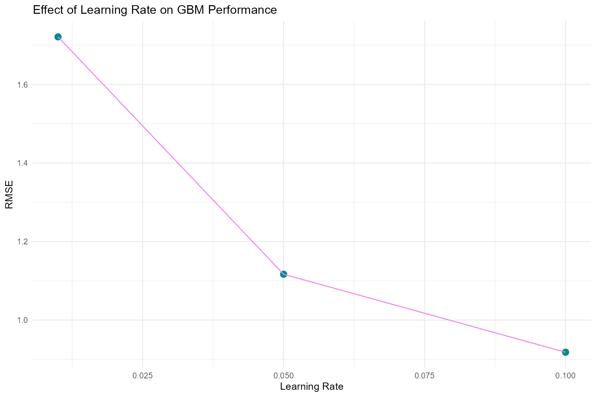
Neural Network Learning Rate
# Example dataset
set.seed(1)
X <- matrix(rnorm(300), ncol = 3)
y_reg <- X[,1] * 2 + rnorm(100)
# Scale inputs (NNs perform better with scaled features)
X_scaled <- scale(X)
# Fit NN models with different learning rates
m_lr_01 <- gradboostr_fit(X_scaled, y_reg, method = "nn",
hidden = 10, epochs = 80, learning_rate = 0.1)
m_lr_005 <- gradboostr_fit(X_scaled, y_reg, method = "nn",
hidden = 10, epochs = 80, learning_rate = 0.05)
m_lr_001 <- gradboostr_fit(X_scaled, y_reg, method = "nn",
hidden = 10, epochs = 80, learning_rate = 0.01)
# Predictions
pred_01 <- gradboostr_predict(m_lr_01, X_scaled)
pred_005 <- gradboostr_predict(m_lr_005, X_scaled)
pred_001 <- gradboostr_predict(m_lr_001, X_scaled)
# RMSE helper
rmse <- function(a, b) sqrt(mean((a - b)^2))
# Results table
df_lr <- data.frame(
learning_rate = c(0.1, 0.05, 0.01),
RMSE = c(
rmse(pred_01, y_reg),
rmse(pred_005, y_reg),
rmse(pred_001, y_reg)
)
)
df_lr learning_rate RMSE
1 0.10 0.9087489
2 0.05 0.9464590
3 0.01 1.9934758
df_lr %>% ggplot() +
aes(learning_rate, RMSE) +
geom_point(size = 3, color = "darkorange") +
geom_line(color = "steelblue") +
theme_minimal() +
labs(
title = "Effect of Learning Rate on Neural Network Performance",
x = "Learning Rate",
y = "RMSE"
)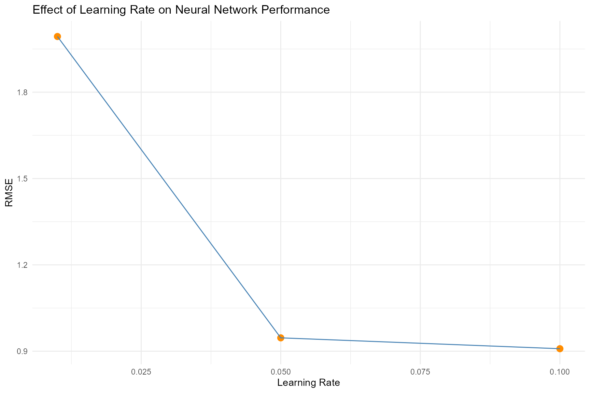
Effect of Epochs
epochs_grid <- c(40, 80, 160)
res_epochs <- lapply(epochs_grid, function(e) {
m <- gradboostr_fit(
X_scaled, y_reg,
method = "nn",
hidden = 10,
epochs = e,
learning_rate = 0.05
)
p <- gradboostr_predict(m, X_scaled)
data.frame(epochs = e, RMSE = rmse(p, y_reg))
})
df_epochs <- do.call(rbind, res_epochs)
df_epochs epochs RMSE
1 40 1.8020304
2 80 0.9469013
3 160 0.9065189
df_epochs %>% ggplot() +
aes(epochs, RMSE) +
geom_point(size = 3, color = "darkorange") +
geom_line(color = "steelblue") +
theme_minimal() +
labs(
title = "Effect of Epochs on NN Performance",
x = "Epochs",
y = "RMSE"
)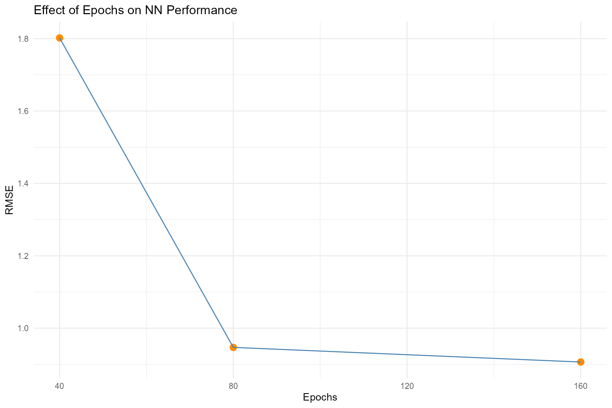
Grid search
hidden_grid <- c(5, 10, 20)
epochs_grid <- c(40, 80)
lr_grid <- c(0.1, 0.05, 0.01)
grid <- expand.grid(
hidden = hidden_grid,
epochs = epochs_grid,
learning_rate = lr_grid
)
res_grid <- lapply(seq_len(nrow(grid)), function(i) {
h <- grid$hidden[i]
e <- grid$epochs[i]
lr <- grid$learning_rate[i]
m <- gradboostr_fit(
X_scaled, y_reg,
method = "nn",
hidden = h,
epochs = e,
learning_rate = lr
)
p <- gradboostr_predict(m, X_scaled)
data.frame(
hidden = h,
epochs = e,
learning_rate = lr,
RMSE = rmse(p, y_reg)
)
})
df_grid <- do.call(rbind, res_grid)
df_grid hidden epochs learning_rate RMSE
1 5 40 0.10 0.9497391
2 10 40 0.10 1.0949751
3 20 40 0.10 0.9426432
4 5 80 0.10 0.9091102
5 10 80 0.10 0.9089933
6 20 80 0.10 0.9073786
7 5 40 0.05 1.9975288
8 10 40 0.05 1.8030661
9 20 40 0.05 1.3472226
10 5 80 0.05 0.9711798
11 10 80 0.05 0.9517309
12 20 80 0.05 0.9492795
13 5 40 0.01 2.0010441
14 10 40 0.01 1.9995503
15 20 40 0.01 2.0003769
16 5 80 0.01 1.9943262
17 10 80 0.01 1.9881691
18 20 80 0.01 1.9902488
df_grid[which.min(df_grid$RMSE), ] hidden epochs learning_rate RMSE
6 20 80 0.1 0.9073786
df_grid %>% ggplot() +
aes(hidden, epochs, fill = RMSE) +
geom_tile(color = "grey70") +
facet_wrap(~ learning_rate) +
scale_fill_viridis_c() +
theme_minimal() +
labs(
title = "NN Grid Search: Hidden, Epochs, Learning Rate",
x = "Hidden Units",
y = "Epochs",
fill = "RMSE"
)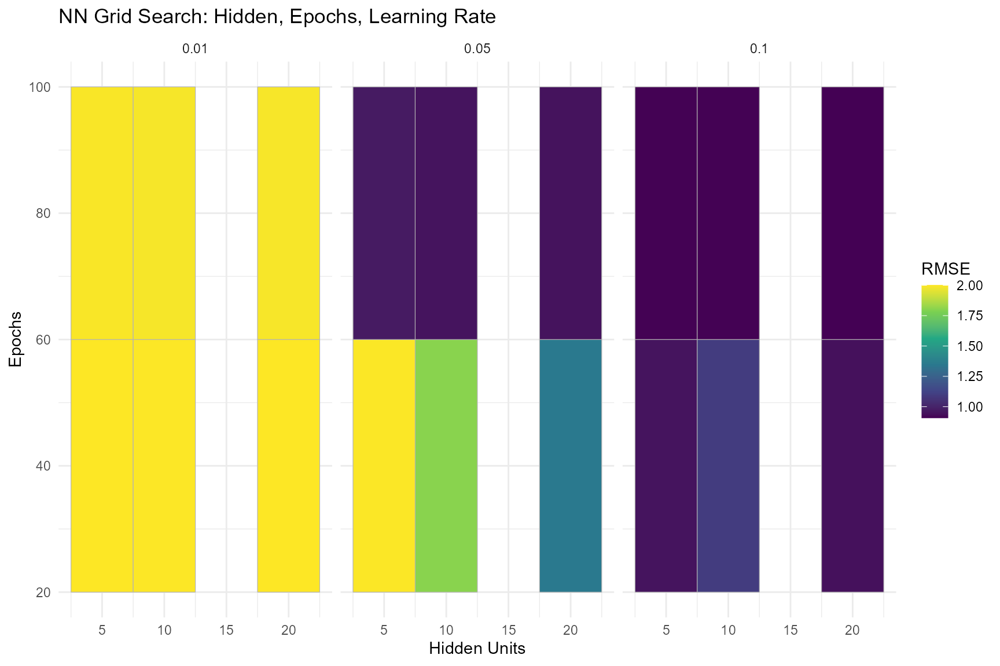
# Fit StumpCreate a synthetic regression dataset with 3 features designed to highlight differences between simple and complex models.
set.seed(683)
X <- cbind(
x1 = rnorm(300),
x2 = rnorm(300),
x3 = rnorm(300)
)
y <- ifelse(X[,1] > 0, 3 + X[,2], -3 + X[,2]) + rnorm(300, sd = 0.4)
df <- data.frame(X1 = X[,1], X2 = X[,2], X3 = X[,3], y = y)
head(df,8) X1 X2 X3 y
1 0.5586183 -0.4886488 0.89097596 2.702116
2 -0.8707739 1.8971701 1.02908180 -1.566701
3 -0.7865119 -1.5629687 0.55436748 -3.766229
4 -1.9809988 -0.6159859 -1.89660647 -3.381007
5 -0.2127845 2.2821943 -0.05569736 0.128354
6 2.3647141 -0.1832020 0.94414711 2.664532
7 0.6239657 -0.2309288 -0.36693268 2.598198
8 1.3161158 0.7762313 -0.01019879 3.861348Fit stump (decision stump)
A decision stump is the simplest possible regression tree: it makes one split on one feature, producing two constant predictions.
The function returns the split (feature + threshold) that yields the lowest total squared error, along with the two predicted values for the left and right regions.
stump <- fit_stump(X, y)
stump$feature
[1] 1
$threshold
[1] -0.05914257
$left_value
[1] -2.986343
$right_value
[1] 2.693698
stump_predict <- function(X, stump) {
f <- stump$feature + 1
thr <- stump$threshold
lv <- stump$left_val
rv <- stump$right_val
ifelse(X[, f] <= thr, lv, rv)
} [1] -2.986343 2.693698 -2.986343 -2.986343 2.693698 -2.986343 -2.986343
[8] 2.693698 2.693698 2.693698 -2.986343 -2.986343 2.693698 -2.986343
[15] -2.986343 2.693698 -2.986343 2.693698 -2.986343 2.693698Generating predictions for other models
m_rf <- gradboostr_fit(X, y, method = "rf")
pred_rf <- gradboostr_predict(m_rf, X)
m_gbm <- gradboostr_fit(
X, y,
method = "gbm",
learning_rate = 0.1,
n_trees = 50
)
pred_gbm <- gradboostr_predict(m_gbm, X)RMSE
RMSE is computed for each model to determine accuracy.
rmse <- function(a, b) sqrt(mean((a - b)^2))
data.frame(
Model = c("Stump", "Random Forest", "GBM"),
RMSE = c(
rmse(pred_stump, y),
rmse(pred_rf, y),
rmse(pred_gbm, y)
)
) Model RMSE
1 Stump 3.6779037
2 Random Forest 0.3356187
3 GBM 0.5183173Comparison visual
df_compare <- data.frame(
Truth = y,
Stump = pred_stump,
RF = pred_rf,
GBM = pred_gbm
)
df_long <- pivot_longer(
df_compare,
cols = c("Stump", "RF", "GBM"),
names_to = "Model",
values_to = "Pred"
)
ggplot(df_long, aes(Truth, Pred)) +
geom_point(alpha = 0.6, color = "steelblue") +
geom_abline(color = "red", linetype = "dashed", linewidth = 1) +
facet_wrap(~ Model) +
theme_minimal() +
labs(
title = "Prediction vs Truth for Stump, Random Forest, and GBM",
subtitle = "Perfect predictions lie on the dashed diagonal line",
x = "True Values",
y = "Predicted Values"
)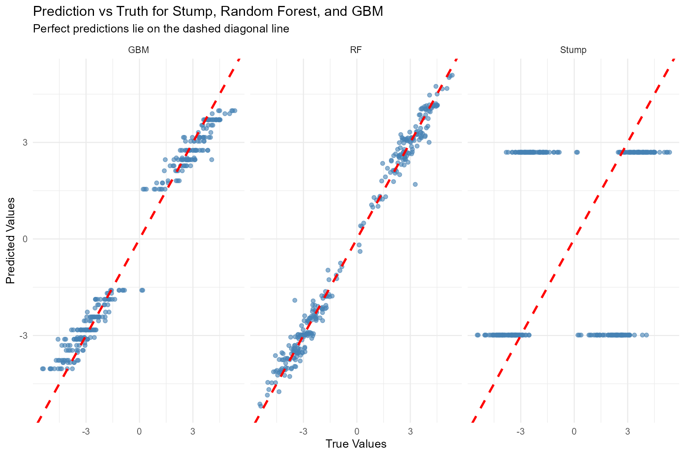
Visuals for synthetic regression dataset.
ggplot(df, aes(X1, y, color = X2)) +
geom_point(alpha = 0.7) +
scale_color_gradient2(low = "blue", high = "red", mid = "white") +
theme_minimal() +
labs(
title = "Synthetic Regression Data",
subtitle = "Two regions defined by the sign of X1",
x = "X1",
y = "Target y",
color = "X2"
)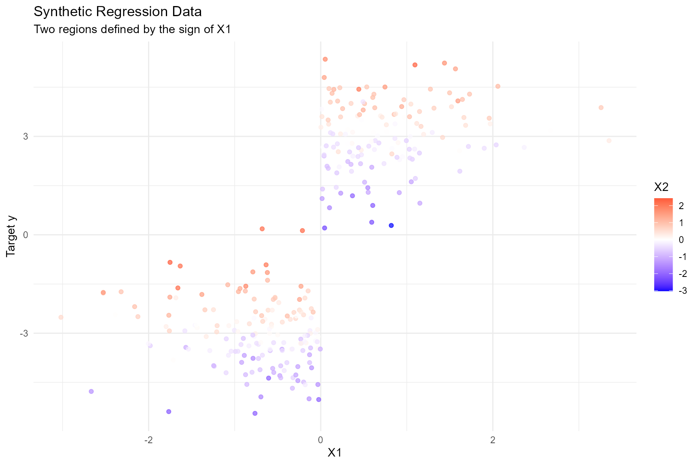
ggplot(df, aes(X1, X2, color = y)) +
geom_point(alpha = 0.8) +
scale_color_gradient2(low = "blue", high = "red", mid = "white") +
theme_minimal() +
labs(
title = "Nonlinear Structure of the Synthetic Dataset",
subtitle = "Clear boundary at X1 = 0",
x = "X1",
y = "X2",
color = "y"
)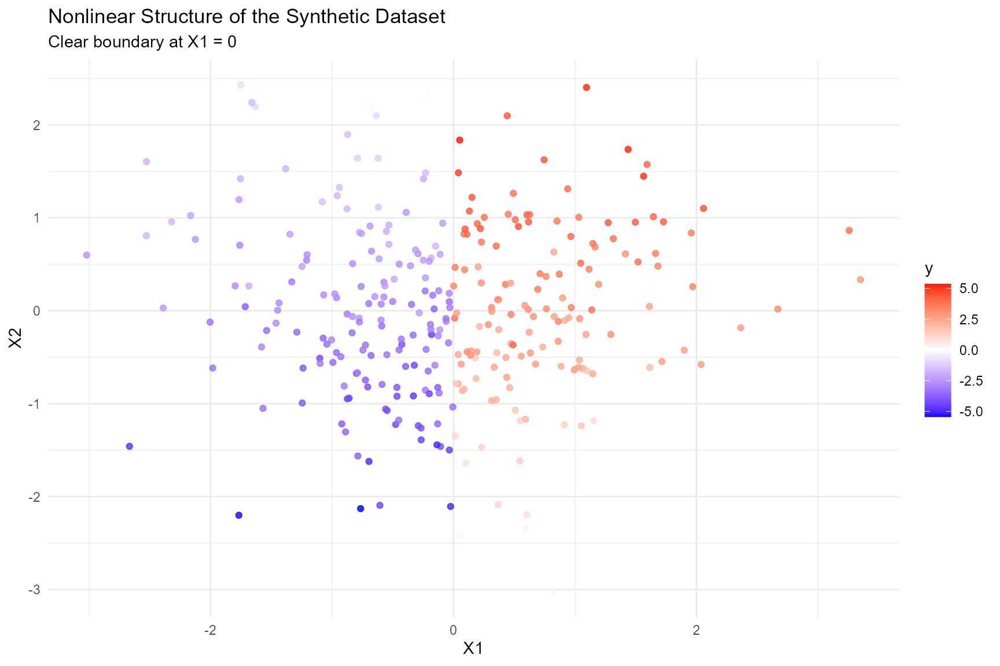